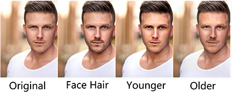
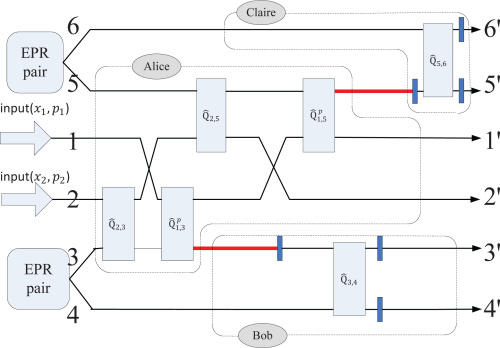

Xin TaoSenior ResearcherYouTu X-Lab Tencent Shenzhen, Guangdong, China Email: [at] gmail
|

|


Biography [CV]
I am currently a Senior Researcher in YouTu X-Lab of Tencent, since 2018. Previously, I was a Ph.D. student in Computer Science and Engineering Department in the Chinese University of Hong Kong (CUHK) since 2013. My supervisor is Prof. Jiaya Jia. Before that, I received the B. Eng. degree in Information Engineering from Shanghai Jiao Tong University (SJTU) in 2013, supervised by Prof. Guangqiang He.
My research interest includes image processing and computer vision.
Publications [Google Scholar]

|
Ruizheng Wu, Xin Tao, Xiaodong Gu, Xiaoyong Shen, Jiaya Jia, "Attribute-Driven Spontaneous Motion in Unpaired Image Translation" IEEE International Conference on Computer Vision (ICCV), 2019. |

|
Hongyun Gao, Xin Tao, Xiaoyong Shen, Jiaya Jia, "Dynamic Scene Deblurring with Parameter Selective Sharing and Nested Skip Connections" IEEE Conference on Computer Vision and Pattern Recognition (CVPR), 2019. |

|
Yi Wang, Xin Tao, Xiaoyong Shen, Jiaya Jia, "Semantic Regeneration Network" IEEE Conference on Computer Vision and Pattern Recognition (CVPR), 2019. |

|
Yi Wang, Xin Tao, Xiaojuan Qi, Xiaoyong Shen, Jiaya Jia, "Image Inpainting via Generative Multi-column Convolutional Neural Networks" Conference on Neural Information Processing Systems (NIPS), 2018. |

|
Xin Tao, Hongyun Gao, Xiaoyong Shen, Jue Wang, Jiaya Jia, "Scale-recurrent Network for Deep Image Deblurring" IEEE Conference on Computer Vision and Pattern Recognition (CVPR), 2018. |
|  | Ying-Cong Chen, Huaijia Lin, Michelle Shu, Ruiyu Li, Xin Tao, Xiaoyong Shen, Yangang Ye, Jiaya Jia, "Facelet-Bank for Fast Portrait Manipulation" IEEE Conference on Computer Vision and Pattern Recognition (CVPR), 2018. |

|
Xin Tao, Chao Zhou, Xiaoyong Shen, Jue Wang, Jiaya Jia, "Zero-order Reverse Filtering" IEEE International Conference on Computer Vision (ICCV) , 2017. |

|
Xin Tao, Hongyun Gao, Renjie Liao, Jue Wang, Jiaya Jia, "Detail-revealing Deep Video Super-resolution" IEEE International Conference on Computer Vision (ICCV) (Oral), 2017.
[project][video results][paper][arxiv] |

|
Xiaoyong Shen, Hongyun Gao, Xin Tao, Chao Zhou,Jiaya Jia, "High-Quality Correspondence and Segmentation Estimation for Dual-Lens Smart-Phone Portraits" IEEE International Conference on Computer Vision (ICCV) , 2017.
[project][paper] |

|
Xiaoyong Shen, Xin Tao, Chao Zhou, Hongyun Gao, Jiaya Jia, "Regional Foremost Matching for Internet Images" ACM Transactions on Graphics, 2016 (Proc. SIGGRAPH ASIA 2016).
[project][paper] |

|
Xiaoyong Shen, Xin Tao, Hongyun Gao, Chao Zhou, Jiaya Jia, "Deep Automatic Portrait Matting" European Conference on Computer Vision (ECCV) , 2016. (Spotlight Presentation)
[project][paper] |

|
Jianping Shi, Xin Tao, Li Xu, Jiaya Jia, "Break Ames Room Illusion: Depth from General Single Images" ACM Transactions on Graphics, 2015 (Proc. SIGGRAPH ASIA 2015). |

|
Renjie Liao, Xin Tao, Ruiyu Li, Ziyang Ma, Jiaya Jia, "Video Super-Resolution via Deep Draft-Ensemble Learning" IEEE International Conference on Computer Vision (ICCV) , 2015. |

|
Ziyang Ma, Renjie Liao, Xin Tao, Li Xu, Jiaya Jia, Enhua Wu, "Handling Motion Blur in Multi-Frame Super-Resolution" IEEE Conference on Computer Vision and Pattern Recognition (CVPR), 2015. |

|
Li Xu, Xin Tao, Jiaya Jia, "Inverse Kernels for Fast Spatial Deconvolution" European Conference on Computer Vision (ECCV), 2014.
[paper] |
|  | Guangqiang He, Taizhi Liu, and Xin Tao, "The multiparty coherent channel and its implementation with linear optics" Optical Express 21(17): 19790-19798, 2013.
[paper] |
Education Background
|
Ph.D. Computer Science and Engineering August 2013 - September 2018 | The Chinese University of Hong Kong Advisor: Jiaya Jia |

|
|
B. Eng. Information Engineering | Honored Class (TRC) January 2011 - January 2013 | Shanghai Jiao Tong University |

|
Research Experience
|
Senior Researcher Youtu Lab | Tencent November 2018 - present | Shenzhen, China |

|
|
PhD Department of Computer Science and Engineering August 2013 - September 2018 | The Chinese University of Hong Kong Advisor: Jiaya Jia |
|
|
Research Intern Youtu Lab | Tencent June 2017 - September 2017 | Shenzhen, China Advisor: Yu-Wing Tai |
|
|
Research Intern Creative Technologies Lab | Adobe Research June 2016 - August 2016 | Greater Seattle Area Advisor: Jue Wang |

|
|
Research Assistant Laboratory of Quantum Nonlinear Photonics (QNP) January 2011 - January 2013 | Shanghai Jiao Tong University Advisor: Guangqiang He |
|
Honors & Awards
| CUHK Certificate of Merit for Best Teaching Assistant Award | 2014-2015 |
| CUHK Postgraduate Studentship | 2013-present |
| Shanghai outstanding graduates (Top 1%) | 2013 |
| National Scholarship (Top 1%) | 2011 |
| SJTU Academic Excellence Scholarship: First-class Prize (Top 1%) | 2011 |
| Third Prize, China Undergraduate Mathematical Contest in Modeling (CUMCM 2011) | 2011 |
| Honorable Mention Prize in Mathematical Contest In Modeling 2011 (MCM 2011) | 2011 |
Professional Activities
|
Journal Reviewer IEEE Transactions on Pattern Analysis and Machine Intelligence (TPAMI) Transaction on Graphics (TOG) IEEE Transactions on Multimedia. |
|
Conference Reviewer CVPR 2018-2019, ECCV 2018, ICCV 2017, ACCV 2018 |
Teaching
| CSCI3290 Computational Photography | 2013-2014 / 2014-2015 / 2015-2016 / 2016-2017 Fall |
| CSCI1050 Hands-on Introduction to MATLAB | 2013-2014 Spring |
| CSCI5280 Image Processing and Computer Vision | 2014-2015 / 2015-2016 Spring |